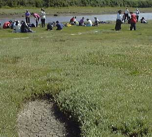

More formally: A salt marsh may be defined as the vegetation (usually dominated by flowering plants) that occurs on muddy shores between approximately mean high water neap and extreme high water spring tides.
If you're not certain what neap and spring tides are (and want to know) go back to the rocky shore section where you can find a brief explanation.
The Gann salt marsh near Dale in Pembrokeshire. Students from North London Collegiate can be seen investigating community development and sun bathing. A dried up salt-pan can be seen in the foreground.
Where marine sediments meet the land and create soil rooted plants can possibly grow unlike on the rocky shore. In the tropics this habitat is called mangrove whilst in temperate regions of the world we find saltmarsh. These environments are extreme for organisms trying to survive here. They form on the seashore due to a lack of wave action and the tide. As the seawater on an incoming tide moves across the very sheltered shore it brings sediment and detritus. The lack of wave action results in this material settling out at slack water (when the tide stops moving). In this way accretion takes place building up the sediment which in time may form soil and even raise the level of mud. So, tides and lack of wave action are important abiotic factors but help create these:
Abiotic Factors:
Saline Mud/Soil |
Problem caused: Seawater will deposit salts (solutes) in the sediment. As a consequence any rooted plants will have problems getting water by osmosis. The soil will have a higher solute potential than the plant and so water would leave the roots and enter the soil. |
Waterlogged Soil |
Problem caused: Waterlogging means that the air spaces within the soil are filled with water rather than air. Roots need oxygen for respiration as much as other parts of the plant, e.g. for the active uptake of minerals. Long-term waterlogging creates an anaerobic condition of black mud (see below). This is due to sulpurating bacteria (true anaerobes) which may be like the earliest forms of life on earth. Using chemosynthesis rather than photosynthesis they leave complex sulphides in the mud. This anoxia as it is called will be toxic to plants. |
Drag and Scour |
Problem caused: the tidal movement across the surface causes a sideways drag on the plant. With two tides a day this will work back and forth possibly uprooting the plants. The water contains sediment like sand and mud particles and this will scour the plants like being buffed with sandpaper. |
 The black mud
The black mud
All of the above abiota will cause severe problems for plants trying to colonise the mud. This is dealt with in more detail in The Saltmarsh Environment section. Those plants which do survive here have some spectacular adaptations. Check out the plant species and why not see how mangrove plants are adapted.
Looking for a next step?
The FSC offers a range of publications, courses for schools and colleges and courses for adults, families and professionals that relate to the seashore environment. Why not find
out more about the FSC?

FEEDBACK
Do you have any questions?
Copyright © 2008 Field Studies Council

Creative Commons Attribution-Noncommercial-No Derivative Works 3.0 Licence .
Site Statistics by Opentracker